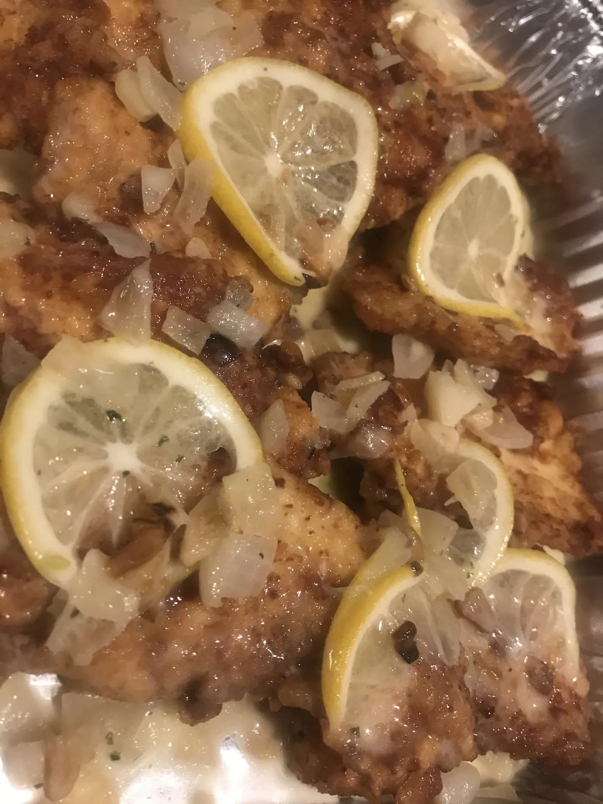
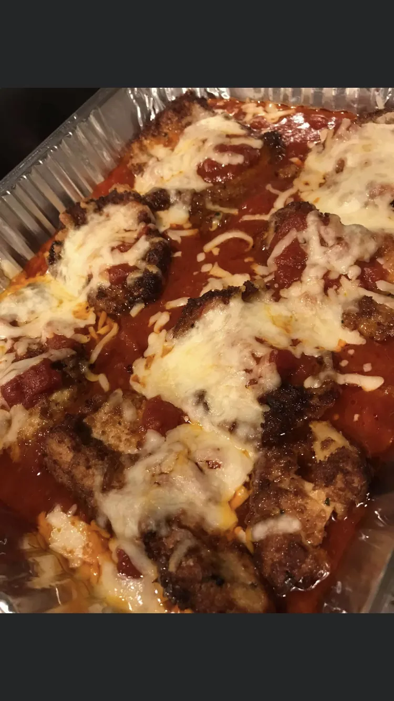

I Cannoli Imagine.
Yes, that's what the cannoli are called on the menu. Call to ask what's on today.
- Cannoli
- Call 781-584-4435
The first improv style cafe bar
Day brunch on house Italian bread, Teresa’s housemade meatballs, family meals to take out, and cannoli, right on Humphrey Street.


Yes, that's what the cannoli are called on the menu. Call to ask what's on today.
Meatball Provolone Panini with Teresa's housemade meatballs on house Italian bread, plus avocado toast, bagels and the Mozzarella Basil Panini. The menu loves to improvise.
Cafe Avellino keeps improv hours: open during the day and evening, mostly. The cafe's own advice is to call ahead and check: 781-584-4435.
Hours of operation
Cafe Avellino keeps improv hours: open during the day and evening, mostly. The cafe’s own advice is to call ahead and check, so one tap does it.
Sweet ending
Yes, that’s what the cannoli are called on the menu. Call to ask what’s on today.
Cafe Avellino hosts events. Ask what’s coming up, or follow along on Facebook and Instagram.
Catering is on offer too. Call or email to talk it through.
Restaurant Guru 2022
Best Italian Restaurant in Swampscott
From the counter
Photos: from Cafe Avellino's public Google Maps listing, used for this private preview.
Come by
About this preview. Built by GunaFix from Cafe Avellino’s own website. Prices are left out on purpose. Photos: from Cafe Avellino's public Google Maps listing, used for this private preview.
From Google Maps
“Well, you walk in and you feel like you entered someone's home. You were welcomed like you were a long lost friend & ready to rekindle lost memories and to make new ones. You ate what she prepared and the authenticity of the food, preparation, presentation and comradery of the owner made this a go to place for anyone looking for that personal touch and just a great place to feel at home while away from home. Teresa will make your evening a night to remember. This was our first visit but not the LAST!”
“So, the food cannoli’s were the best I’ve had in my life, a good amount due to the rich but light cream. Teresa, the owner, was so warm and friendly that the service and atmosphere blended to giving the customer the feeling of a happy,”
“Teresa’s Cafe Avellino is a fantastic spot for some authentic Italian food in the North Shore area. We visited on a gloomy Sunday but the food and drinks served just changed the whole atmosphere. The pasta was incredible, the lemon drop style martini incredible, the cannoli incredible. I mean seriously, you have to go there. Don’t go by the size of the cafe but go for the food and the amazing service by Teresa. If you’re smart enough, you’ll get your date to this place. It’s a hidden gem!”
“Just go. It’s more than dinner, it’s an experience. The food is incredible but Teresa is a gem. You’ll feel right at home and Teresa makes everyone feel special. Cafe Avellino will be our first stop when we come back. We came for the food but we’ll be back for Teresa (and the food because we’re not dummies!!).”
“MUST VISIT. Theresa was an incredible host and chef. She hosts only a few families an evening and we were so lucky to experience it. Wow, incredible evening and culinary adventure. We will be back soon! Every bite was 10/10.”
Quoted verbatim from this restaurant's public Google Maps listing.